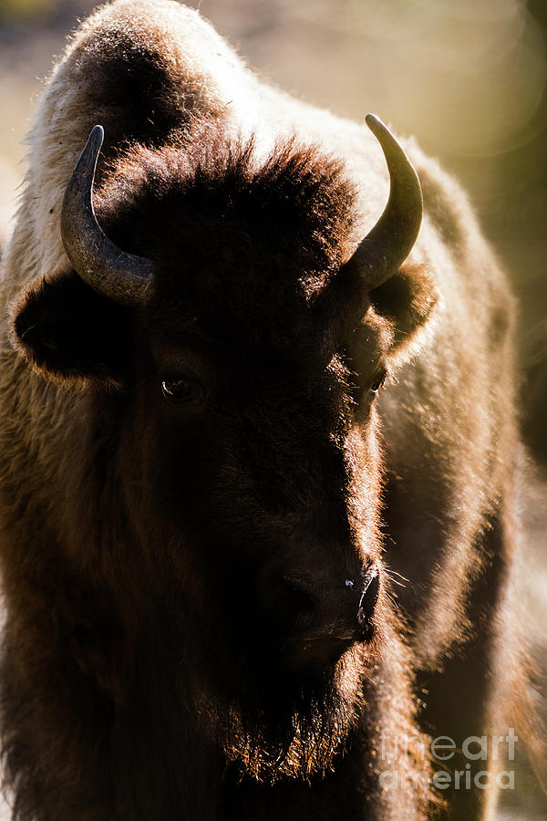
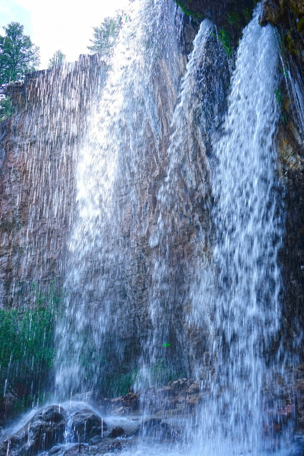
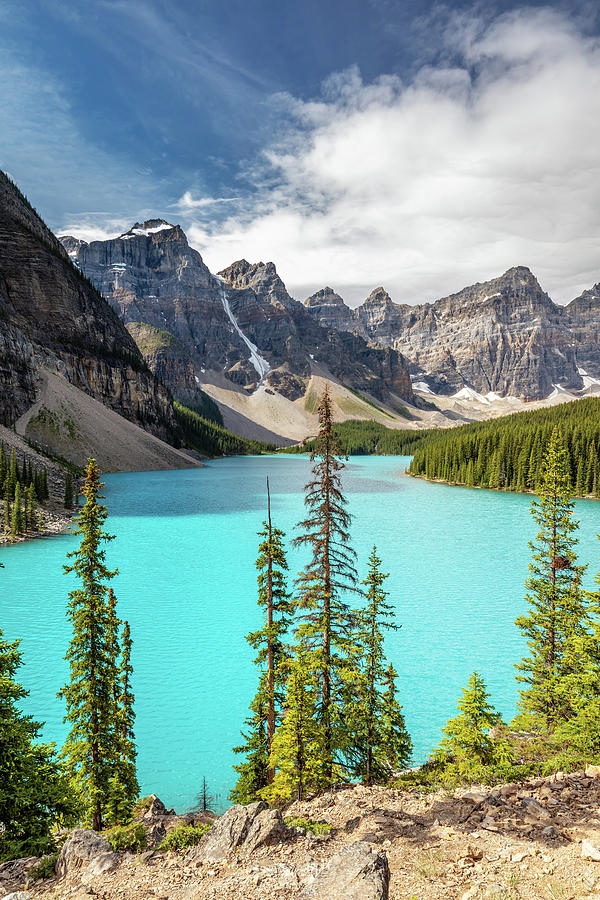

Grand Teton National Park is about 2 hours away from Rexburg, but trust me, it is well worth the drive! You’ll pass through Jackson Hole, a cute tourist town with incredible food options. Stop for a bite to eat then enter Teton territory! Driving through the mountains is surreal and you’ll want to create a folksy playlist to set the mood. Whether you’re into skiing, hiking, fishing or taking artsy mountain pictures to appear more adventurous on Instagram, there’s something for everyone!
More Information

Jenny Lake
Jenny Lake is considered to be a major focal point in Grand Teton National Park. With many hiking trails, scenic boat rides, and quick access to the major climbing routes onto the tallest peaks of the Teton Range.


Hour
Grand Teton National Park is open twenty-four hours every day, year-round.
Seasonal road closures may limit auto access to some areas in the park during the winter.

Hidden Fall
One of the most popular trails in the park, hiking to Hidden Falls allows for spectacular views of Jenny Lake and Jackson Hole, as well as a 100 ft cascading waterfall. Visitors may choose to walk around the southern lakeshore or utilize the privately-run shuttle boat to cross the lake and shorten the hike.